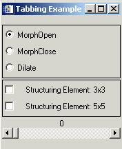

Implementing features such as tabbing and keyboard accelerators into applications that require extensive user-interaction with widget elements can improve application usability. This allows power-users to quickly make selections and initiate actions using the keyboard instead of the mouse. See the following sections for details:
Microsoft Windows and UNIX platforms support using the Tab key to navigate between IDL widgets (except draw widgets, label widgets and property sheet widgets on Windows). Under Windows, the TAB_MODE keyword determines how IDL widgets are affected by tabbing in an application. Under UNIX, the Motif library controls what widgets can receive and lose focus through tabbing. The TAB_MODE keyword is ignored when running a widget application on the UNIX platform.
Note: It is not possible to tab to disabled (SENSITIVE=0) or hidden (MAP=0) widgets.
The following table highlights other differences in tabbing functionality between the two platforms.
Note: WIDGET_LABEL, WIDGET_PROPERTYSHEET, WIDGET_DRAW, and menu-related widgets do not support receiving or losing focus through tabbing. See the TAB_MODE keyword for each widget for special behavior and navigation notes.
The TAB_MODE keyword provides control over tabbing behavior in a Windows application. This keyword controls navigation by specifying how a given widget should respond to the Tab key.
Allowable values are:
|
Value |
Description |
|
0 |
Disable navigation onto or off of the widget. This is the default unless the TAB_MODE has been set on a parent base. Child widgets automatically inherit the tab mode of the parent base as described in Inheriting the TAB_MODE Value . |
|
1 |
Enable navigation onto and off of the widget. |
|
2 |
Navigate only onto the widget. |
|
3 |
Navigate only off of the widget. |
Note: Widgets including top level bases have a TAB_MODE value of zero by default.
Note: In widget applications on the UNIX platform, the Motif library controls what widgets are brought into and released from focus using tabbing. The TAB_MODE keyword value is always zero, and any attempt to change it is ignored when running a widget application on the UNIX platform. Tabbing behavior may vary significantly between UNIX platforms; do not rely on a particular behavior being duplicated on all UNIX systems.
Many compound widgets also support the TAB_MODE keyword. See each CW_* widget for more information.
Navigation among widgets follows the widget hierarchy. Although it is not possible to specify a tab order, the widget tree hierarchy provides a natural progression among the widgets. Traversal is depth-first, meaning that once a widget receives focus through tabbing, additional tabbing will navigate through the interior nodes of the widget if possible before traversing to the next widget.
The TAB_MODE is either inherited from a parent base or explicitly set on a widget. However, to understand the effective range of a TAB_MODE setting, the TAB_MODE keyword value and the current focus must be considered.
Note: Depressing the Tab key navigates down the widget hierarchy or to the right. Depressing Shift + Tab navigates up the widget hierarchy or to the left.
The TAB_MODE keyword is allowed in most widget creation routines with the exception of WIDGET_LABEL, WIDGET_PROPERTYSHEET, and WIDGET_DRAW. The TAB_MODE keyword also cannot be explicitly set for the following widgets:
Attempting to set TAB_MODE on these widgets will generate an error.
Tabbing behavior is inherited from a WIDGET_BASE. When TAB_MODE is set on a base widget, child widgets inherit the setting when they are created. This provides a quick way of enabling or disabling tabbing for all widgets belonging to a base. This is especially useful for widgets that do not directly support the TAB_MODE keyword. For example, attempting to set TAB_MODE for exclusive, grouped button widgets (radio buttons) will generate an error. Setting the tab mode on the parent base passes the specified tabbing functionality along to all widget children on that base. In the following code, the base ( base ) is defined as one which can receive and lose focus through tabbing. The child widgets ( b1 , b2 , and b3 ) inherit this setting and will receive and lose focus through tabbing as well.
Note: See the following section for the complete, working example.
; Define a base for the radio buttons.
base = WIDGET_BASE(tlb, /COLUMN, /FRAME, /EXCLUSIVE, TAB_MODE = 1)
b1 = widget_button( base, $
value = "MorphOpen" , UVALUE="Open")
b2 = widget_button( base, $
value = "MorphClose" , UVALUE="Close")
b3 = widget_button( base, $
value = "Dilate ", UVALUE="Dilate")
; Set button one as selected.
WIDGET_CONTROL, b1, /SET_BUTTON
Use WIDGET_CONTROL to make an initial selection within the group of radio buttons. This needs to be set before the group can receive focus through tabbing.
Note: For a child widget to receive focus through tabbing, the parent base must have a value of TAB_MODE=1 (receive and lose focus) or TAB_MODE=2 (only receive focus). A parent base with a TAB_MODE=0 or TAB_MODE=3 insulates child widgets from receiving focus. Only when focus is on the child widget would the child’s individual TAB_MODE value be in effect.
The tab mode of the parent base is inherited by child widgets, but it is possible to control what widgets can receive or lose focus by specifying different TAB_MODE values on lower-level bases or individual widgets. For example, consider a top level base populated with a group of radio buttons, a group of check boxes, and a slider widget. The top level base has TAB_MODE=1, meaning that this base, and all widgets that inherit the setting from the base, will be able to receive and lose focus through tabbing. However, the TAB_MODE of the slider widget is explicitly set to 3 meaning that it can lose, but not receive focus. This excludes the widget from receiving focus when navigating the widget hierarchy. However, when focus is on a widget with a TAB_MODE keyword value of 3, and the Tab key is depressed, focus leaves the current widget and returns to the first widget that accepts focus through tabbing. The following simple example illustrates these concepts.
pro tabbing_example_event, event
; Return and print the uvalue of the widget with focus.
WIDGET_CONTROL, event.ID, GET_UVALUE = uvalue
PRINT, 'Event on: ', UVALUE
end
pro tabbing_example
; Create a top level base. Specify a tab mode that allows child
; widgets to receive and lose focus (TAB_MODE=1).
tlb = WIDGET_BASE(/COLUMN, TITLE = "Tabbing Example", $
XPAD=0, YPAD=10, XOFFSET=25, YOFFSET=25, TAB_MODE=1)
; Create a base with radio buttons that inherits the ability
; to receive and lose focus through tabbing from parent tlb. This
; setting is also inherited by widget children of rbase.
rbase = WIDGET_BASE(tlb, /COLUMN, /FRAME, /EXCLUSIVE)
rb1 = WIDGET_BUTTON(rbase, VALUE = "MorphOpen", UVALUE = "Open")
rb2 = WIDGET_BUTTON(rbase, VALUE = "MorphClose", UVALUE = "Close")
rb3 = WIDGET_BUTTON(rbase, VALUE = "Dilate", UVALUE = "Dilate")
; Mark the first button as selected to enable tabbing to the
; group of radio buttons.
WIDGET_CONTROL, rb1, /SET_BUTTON
; Create a base with check boxes that inherits the ability to
; receive and lose focus through tabbing from tlb. This setting
; is also inherited by widget children of cbase.
cbase = WIDGET_BASE(tlb, /COLUMN, /FRAME, /NONEXCLUSIVE)
b1 = WIDGET_BUTTON(cbase, $
VALUE = "Structuring Element: 3x3", UVALUE = "se3x3")
b2 = WIDGET_BUTTON(cbase, $
VALUE = "Structuring Element: 5x5", UVALUE = "se5x5")
; Create a slider widget. Set the tab mode so that it can
; lose focus, but not receive focus through tabbing.
slider = WIDGET_SLIDER(tlb, UVALUE = 'slider', TAB_MODE=3)
; Draw the widgets and activate events.
WIDGET_CONTROL, tlb, /REALIZE
XMANAGER, 'tabbing_example', tlb, /NO_BLOCK
end
Save and run the above code. This results in a group of widgets similar to the following figure.
|
 |
Select a radio button or check box and then depress the Tab key to navigate between these widgets. With the mouse select and move the slider. Press the Tab key and the focus shifts to the group of radio buttons.
On Windows, use the arrow keys to navigate among the radio button options. Tab to the check boxes. Depress the Space key to select or deselect a check box. Use the Tab key to navigate through the check box options. Once the slider has focus, the arrow keys, Page Up and Page Down keys can be used to move the slider marker.
On UNIX, the TAB_MODE keyword is ignored. The arrow keys can be used to navigate between radio buttons, check boxes, and move the slider marker.
The TAB_MODE keyword value can be changed using WIDGET_CONTROL and queried using WIDGET_INFO. A change made to TAB_MODE using WIDGET_CONTROL affects only the widget for which the change is explicitly made. If changed on a widget base, the change is not propagated to the child widgets that have already been created. Use WIDGET_CONTROL to change the TAB_MODE value of any widget that supports the TAB_MODE keyword.
For example, if the TAB_MODE keyword value of the top level base is changed from 1 to 0 after child widgets have been created, tabbing will still be enabled for any applicable child bases or widgets when they have focus.
WIDGET_CONTROL, tlb, TAB_MODE=0
Use WIDGET_INFO to return any widget’s TAB_MODE keyword value. For example, the following returns the keyword value of a slider widget, slider .
; Query the tabbing capabilities of a slider widget.
vtabmode = WIDGET_INFO(slider, /TAB_MODE)
print, vtabmode
Note: In widget applications on the UNIX platform, the Motif library controls what widgets are brought into and released from focus using tabbing. The TAB_MODE keyword value is always zero, and any attempt to change it is ignored when running a widget application on the UNIX platform. Tabbing behavior may vary significantly between UNIX platforms; do not rely on a particular behavior being duplicated on all UNIX systems.
Keyboard accelerators allow the user to activate button widget events using keyboard key combinations instead of the mouse. On Windows platforms, accelerators can be defined for menu items and various types of WIDGET_BUTTON. Note, however, that:
Note: Ordinarily, accelerators are processed before keyboard events reach a widget. This can cause button accelerators to steal keyboard events from widgets that have focus. If you find that this is an issue, see Disabling Button Widget Accelerators .
The following tips should be kept in mind when adding accelerators to button widgets:
Two steps are required to enable accelerators that use the Alt key to work with the Macintosh Apple key (also known as the Command key):
Create a .Xmodmap file in your home folder and add the following three lines to it:
clear mod1
clear mod2
add mod1 = Meta_L
When Apple’s X11 program starts, this file will automatically be read, and the Apple key will be mapped to the left meta key , which for IDL’s purposes is the Alt key. (Windows Alt key accelerators are mapped to the Macintosh Apple key, not the Option (alt) key.)
Note: You must relaunch Apple’s X11 program for these changes to take effect.
Performing these two steps will also have the benefit of making the IDL Workbench’s keyboard shortcuts operate in the normal Macintosh fashion. Namely, pressing the Apple ( key) in conjunction with X, C, and V will perform cut, copy and paste. The IDL Workbench’s other shortcuts will also work. If you distribute your application to other Macintosh users, they too will need to have an appropriate .Xmodmap and correct X11 Preferences dialog settings in order for Alt key accelerators to work.
The ACCELERATOR keyword assigns a key combination that activates a menu item or button event. The value of the keyword is a case-insensitive string that specifies zero or more modifier keys ( Ctrl , Shift , or Alt ) and one other key. (Mac users must take special steps to enable Alt key accelerators. See Enabling Alt Key Accelerators on Macintosh for details.) If there is more than one item in the string, a “+” must separate them. For example:
base = WIDGET_BASE( tlb, /COLUMN, /FRAME )
bRun = WIDGET_BUTTON( base, VALUE = "Run", ACCELERATOR = "F5" )
bPause = WIDGET_BUTTON( base, VALUE = "Pause", $
ACCELERATOR = "Ctrl+F5" )
bResume = WIDGET_BUTTON( base, VALUE = "Resume", $
ACCELERATOR = "Ctrl+Shift+F5" )
Note: Accelerators can be defined for menu items and other types of WIDGET_BUTTON on Windows. However, UNIX supports only menu item accelerators. Context menu items do not support accelerators on any platform.
The valid combinations are:
|
Accelerator Keys |
Description |
|
Ctrl , Shift , or Alt plus an alphanumeric key |
A modifier key plus any alphabetic character, A-Z (which is case-insensitive), or a number, 0-9, creates a valid accelerator. |
|
Ctrl , Shift , or Alt plus a number pad key |
A modifier key plus any key on the number pad can be used as an accelerator The NumLock key must be activated for any accelerator using number pad keys to function properly. Note: On Windows only, a keyboard accelerator using the Shift key and a number key on the number pad will not work. |
|
Ctrl , Shift , or Alt plus the BackSpace , Tab or Space key |
These miscellaneous keys need a modifier key in the accelerator definition. |
|
Navigation keys ( Home , End , PageUp , PageDown , Up , Down , Left , Right ) |
The navigation keys do not require a modifier in the accelerator definition. Prior and PageUp are equivalent as are Next and PageDown . Up , Down , Left , and Right map to the arrow keys. |
|
Function keys ( F1 to F12 ) |
Function keys do not need a modifier key in the accelerator definition. However, not all platforms support the use of all function keys as accelerators. See Successfully Implementing Keyboard Accelerators for details. |
|
Return , Escape , Insert , Del keys |
These miscellaneous keys do not need a modifier key in the accelerator definition. You must specify Return in the accelerator definition to indicate the Enter key on Windows. You must specify Del in the accelerator definition to indicate the Delete key. |
When an accelerator is defined for a menu item, the ACCELERATOR keyword string is automatically displayed next to the menu item value. The ACCELERATOR keyword string is not included with a button value. Therefore, the VALUE keyword of a WIDGET_BUTTON that is not a menu item should also indicate the accelerator keyboard shortcut so that the user is aware of the option.
The following simple example creates a variety of WIDGET_BUTTON types with accelerators.
; AcceleratorExample.pro
; Example of the use of keyboard accelerators.
pro acceleratorexample_event, event
WIDGET_CONTROL, event.ID, GET_UVALUE = uvalue
PRINT, 'Event on: ', uvalue
IF ( uvalue EQ 'Quit' ) THEN BEGIN
WIDGET_CONTROL, event.TOP, /DESTROY
END
end
pro AcceleratorExample
tlb = WIDGET_BASE( /ROW, $
MBAR = mbar, TITLE = "Accelerator Example", $
XPAD = 10, YPAD = 10, XOFFSET = 25, YOFFSET = 25 )
; Create a menu with accelerators. The accelerator string is
; automatically displayed along with the menu item text.
file = WIDGET_BUTTON( mbar, /MENU, $
VALUE = "File" )
one = WIDGET_BUTTON( file, $
VALUE = "One", UVALUE = "One", $
ACCELERATOR = "Ctrl+1" )
two = WIDGET_BUTTON( file, $
VALUE = "Two", UVALUE = "Two", $
ACCELERATOR = "Ctrl+2" )
three = WIDGET_BUTTON( file, $
VALUE = "Three", UVALUE = "Three", $
ACCELERATOR = "Ctrl+3" )
quit = WIDGET_BUTTON( file, $
VALUE = "Quit", UVALUE = "Quit", $
ACCELERATOR = "Ctrl+Q" )
; Create a base with push buttons. Include the accelerator
; text in the button value so users are aware of it.
base = WIDGET_BASE( tlb, /COLUMN, /FRAME )
b1 = WIDGET_BUTTON( base, $
VALUE = "Affirmative (Ctrl+Y)", UVALUE = "Yes", $
ACCELERATOR = "Ctrl+Y" )
b2 = WIDGET_BUTTON( base, $
VALUE = "Negative (Ctrl+N)", UVALUE = "No", $
ACCELERATOR = "Ctrl+N" )
; Create a base with radio buttons.
base = WIDGET_BASE( tlb, /COLUMN, /FRAME, /EXCLUSIVE )
b1 = widget_button( base, $
VALUE = "Owl (Ctrl+O)", UVALUE = "Owl", $
ACCELERATOR = "Ctrl+O" )
b2 = WIDGET_BUTTON( base, $
VALUE = "Emu (Shift+E)", UVALUE = "Emu", $
ACCELERATOR = "Shift+E" )
b3 = WIDGET_BUTTON( base, $
VALUE = "Bat (Alt+B)", UVALUE = "Bat", $
ACCELERATOR = "Alt+B" )
; Create a base with check boxes.
base = WIDGET_BASE( tlb, /COLUMN, /FRAME, /NONEXCLUSIVE )
b1 = WIDGET_BUTTON( base, $
VALUE = "Hello (F3)", UVALUE = "Hello", $
ACCELERATOR = "F3" )
b2 = WIDGET_BUTTON( base, $
VALUE = "Goodbye (F4)", UVALUE = "Goodbye", $
ACCELERATOR = "F4" )
; Create the widgets and accept events.
WIDGET_CONTROL, tlb, /REALIZE
XMANAGER, 'acceleratorexample', tlb, /NO_BLOCK
IF !VERSION.OS_FAMILY NE 'Windows' THEN BEGIN
text = ['Accelerators on non-menu items are not supported', $
'on this platform.', ' ', $
'Accelerators on menu items work on all platforms.']
void = DIALOG_MESSAGE(text, /INFO)
ENDIF
end
Save and run the example. The Output Log window reports which button has been activated using the accelerator.
Note: Menu item accelerators are only operational when the menu is closed.
Keyboard events are intercepted by the accelerators before they are passed along to widgets. This means that a widget will never see a keyboard event that maps to an accelerator. This can be resolved using one of the following methods:
The IGNORE_ACCELERATORS keyword is available on the following widgets:
For each widget with a text area, accelerator overrides are active only when focus is on an editable text portion. (Accelerator overrides for draw widgets are active when the drawing area has focus.) For example, when the focus is on a table cell that cannot be edited, accelerators are still enabled.
Note: Depending on system hardware, the number of widgets that have accelerators, and the number of accelerators ignored, you may notice a slight performance penalty.
Set the IGNORE_ACCELERATORS equal to the text string of a single accelerator, an array containing multiple accelerator strings, or 1 (to ignore all accelerators).
The following example shows various ways accelerators can be managed. This example creates several menu items with accelerators. Three text boxes either allow all accelerators, some accelerators or no accelerators to receive keyboard events. Additionally you can select a checkbox to desensitize the Delete menu item. When the menu item is desensitized, the accelerator never receives keyboard events.
PRO manage_accel, event
END
PRO quit_event, event
WIDGET_CONTROL, event.top, /DESTROY
END
PRO menu_event, event
PRINT, WIDGET_INFO( event.id, /UNAME )
END
PRO menu_sense_event, event
deleteItem = WIDGET_INFO( event.top, FIND_BY_UNAME ="MenuDel" )
WIDGET_CONTROL, deleteItem, SENSITIVE = event.select
END
pro manage_accel
; Create the top level base.
tlb = WIDGET_BASE( /COLUMN, MBAR = mbar, XSIZE = 250, /TAB_MODE)
; Build the menu bar.
edit= WIDGET_BUTTON( mbar, /MENU, VALUE = "Edit" )
menuDel = WIDGET_BUTTON( edit, VALUE = "Delete", $
UNAME = "MenuDel", ACCELERATOR = "Del", $
EVENT_PRO = "menu_event" )
menuCut = WIDGET_BUTTON( edit, VALUE = "Cut", $
UNAME = "MenuCut", ACCELERATOR = "Ctrl+X", $
EVENT_PRO = "menu_event" )
menuCopy = WIDGET_BUTTON( edit, VALUE = "Copy", $
UNAME = "MenuCopy", ACCELERATOR = "Ctrl+C", $
EVENT_PRO = "menu_event" )
menuPaste = WIDGET_BUTTON( edit, VALUE = "Paste", $
UNAME = "MenuPaste", ACCELERATOR = "Ctrl+V", $
EVENT_PRO = "menu_event" )
menuUndo = WIDGET_BUTTON( edit, VALUE = "Undo", $
UNAME = "MenuUndo", ACCELERATOR = "Ctrl+Z",$
EVENT_PRO = "menu_event" )
quit = WIDGET_BUTTON( edit, VALUE = "Quit", $
ACCELERATOR = "Ctrl+Q", EVENT_PRO = "quit_event" )
; Add text boxes with various levels of disabled accelerators.
text1 = WIDGET_TEXT( tlb, /EDITABLE, $
VALUE = "Doesn't use IGNORE_ACCELERATORS." )
text2 = WIDGET_TEXT( tlb, /EDITABLE, $
VALUE = "Receives Delete key and Ctrl+C combinations.", $
IGNORE_ACCELERATORS = [ "Del", "Ctrl+C" ] )
text3 = WIDGET_TEXT( tlb, /EDITABLE, $
VALUE = "Receives all accelerator key combinations.", $
IGNORE_ACCELERATORS = 1)
; Add a check box to desensitize the Delete menu item.
base2 = WIDGET_BASE( tlb, /FRAME, /NONEXCLUSIVE )
check1 = WIDGET_BUTTON( base2, VALUE = "Menu DEL sensitive", $
EVENT_PRO = "menu_sense_event" )
WIDGET_CONTROL, check1, SET_BUTTON = WIDGET_INFO ( menuDel, $
/SENSITIVE )
; Draw the widget.
WIDGET_CONTROL, tlb, /REALIZE
XMANAGER, "manage_accel", tlb, /NO_BLOCK
END
Compile and run the example. Try highlighting and deleting, or copying and pasting text in each textbox using accelerators defined in the Edit menu. All keyboard events are ineffective (stolen by the accelerators) when the first textbox has focus. The second textbox receives only copy and delete keyboard combinations. The third textbox receives all accelerators. When the delete menu item is desensitized, the Delete key can delete text from all textboxes. The IDL Output Log window prints the name of any menu item that is activated using an accelerator.